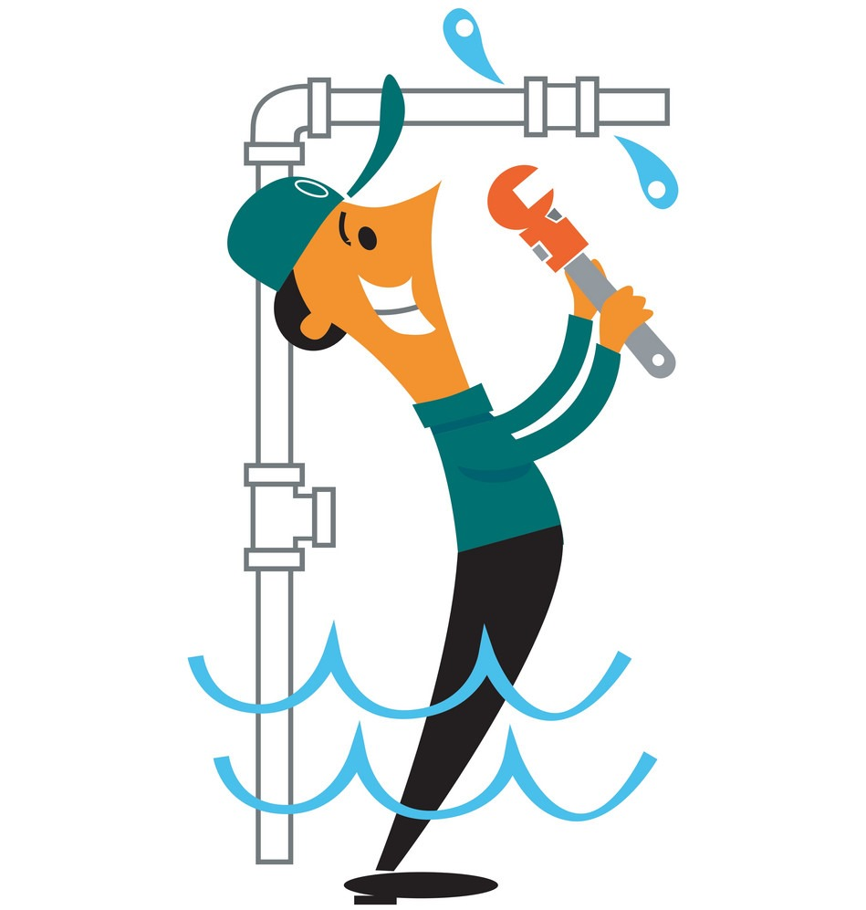
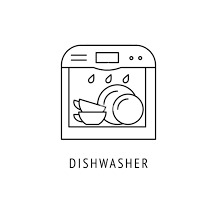
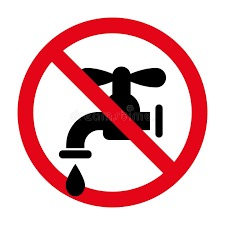
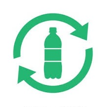
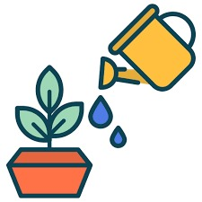

Water Saving Tips

Take Shorter Showers
Reduce shower time to 5 minutes or less. This not only saves water but also gives you more time to study or relax!

Wash Clothes Less Often
Wear clothes more than once (if appropriate) before washing. Running fewer loads of laundry saves both water and energy.
Report Leaks to Maintenance
If you notice a leaky faucet or running toilet in your dorm or apartment, report it to the maintenance team. Fixing leaks saves hundreds of gallons of water.
Run Full Loads
Whether it's the dishwasher or washing machine, only run full loads to maximize water use efficiency.
Turn Off the Tap While Brushing
Turning off the tap while brushing your teeth or washing your face saves about 3-4 gallons of water each time.
Use a Reusable Water Bottle
Instead of running the tap each time you're thirsty, keep a reusable bottle handy and refill it as needed.
Water Plants Wisely
If you have plants, water them in the early morning or late evening to reduce evaporation and save water.

Wash Your Vehicle Carefully
Use a bucket and sponge to wash your vehicle instead of a hose. This reduces water waste significantly.